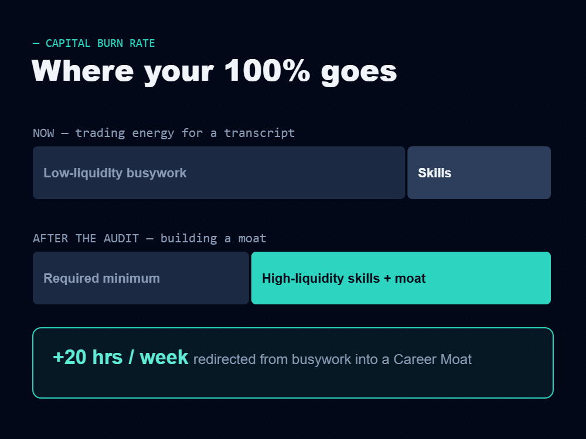

Turn your degree into an edge no other graduate can copy.
8 weeks of 1-on-1 work, built around your units, your goals and your market.
Then 90 days of follow-up support, so the plan keeps moving after we finish.
Founding round open: 80% off the full rate
Most students see the problem when no semesters are left to fix it.
Say your CV goes out to 100 companies. It comes back as a number:
And the job you do land is often the entry-level task work AI absorbs first.
Built for Year 2 to 5 and final-semester students.
Every semester without an answer costs you not only a full semester of fees, but also your time, effort, opportunity cost and everything else that semester could have built.
In 8 weeks you leave with 5 pieces of work that answer it, built on your own degree.
8 weeks. 5 pieces of work. All built on your degree.
Your 8 weeks, then 90 days, week by week.
A sample layout. In Session 1 we pick your real days around your classes. Each week has one call or one short written update (about 5 minutes on your side), and my full toolkit is open to you from day 1.
You run your 90-Day Map on your own, with my toolkit, and I stay on call between reviews.
The Architect's Table is new, and I want to build it with my first students. You get the full 8 weeks and every piece of work at the lowest rate it will ever have. In return, I ask for honest feedback and, if it helped you, your story. Your feedback tells me what to keep and what to fix, so the next student gets a better version because of you.
Each round has only 3 seats.
A round opens only when the one before it fills, and the rate you join at stays locked for any renewal. The form charges nothing. You see your exact rate right after you apply, and you pay only after we both agree it fits.
Apply For 1-on-1 With PascalIf a piece is missing at the end and you did your part, we keep working 1-on-1 until it exists.